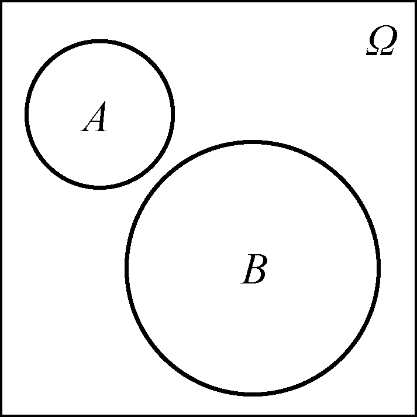
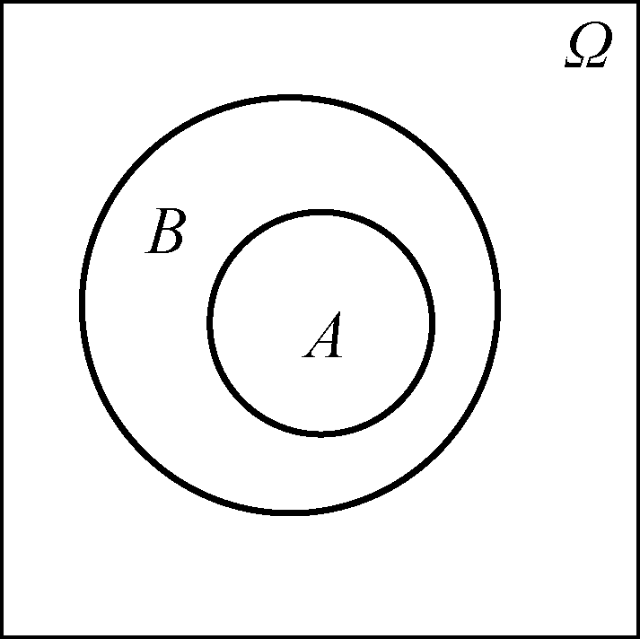
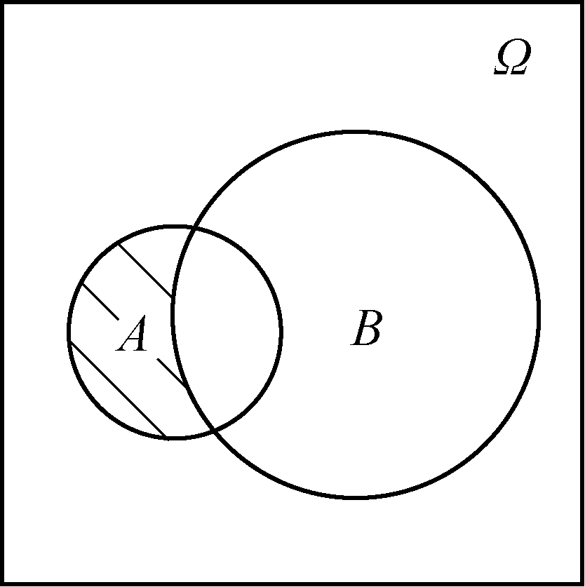
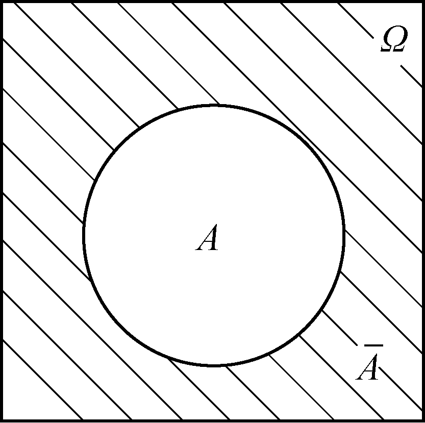
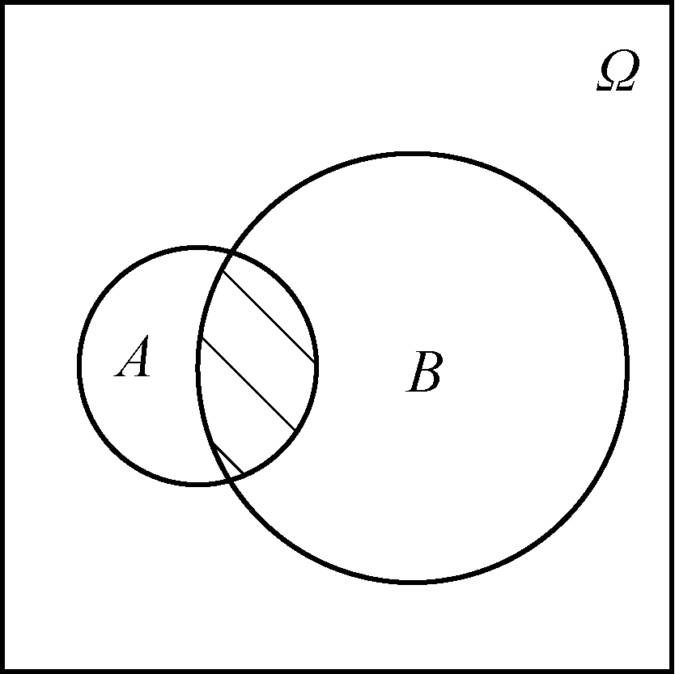
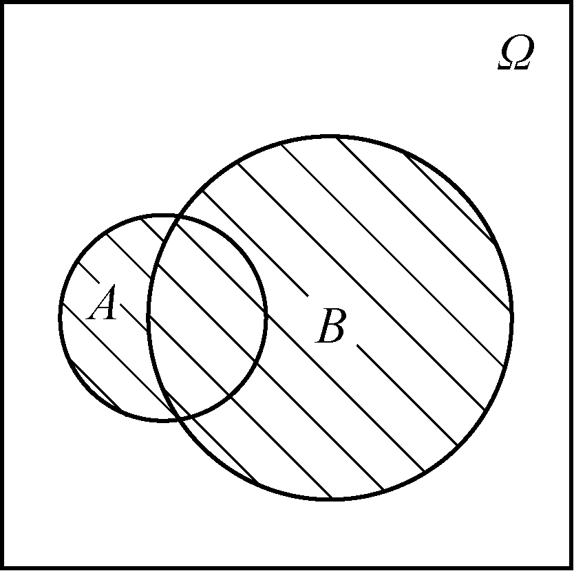
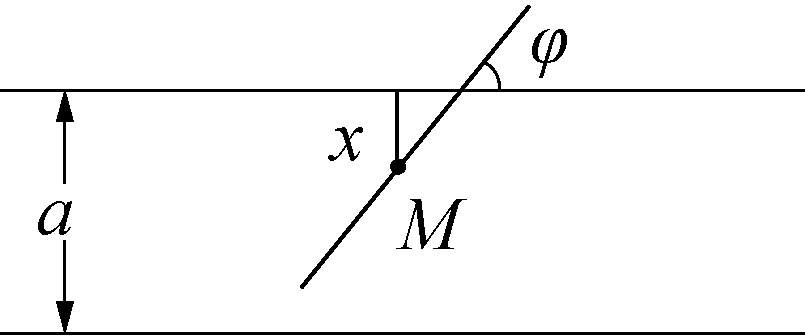
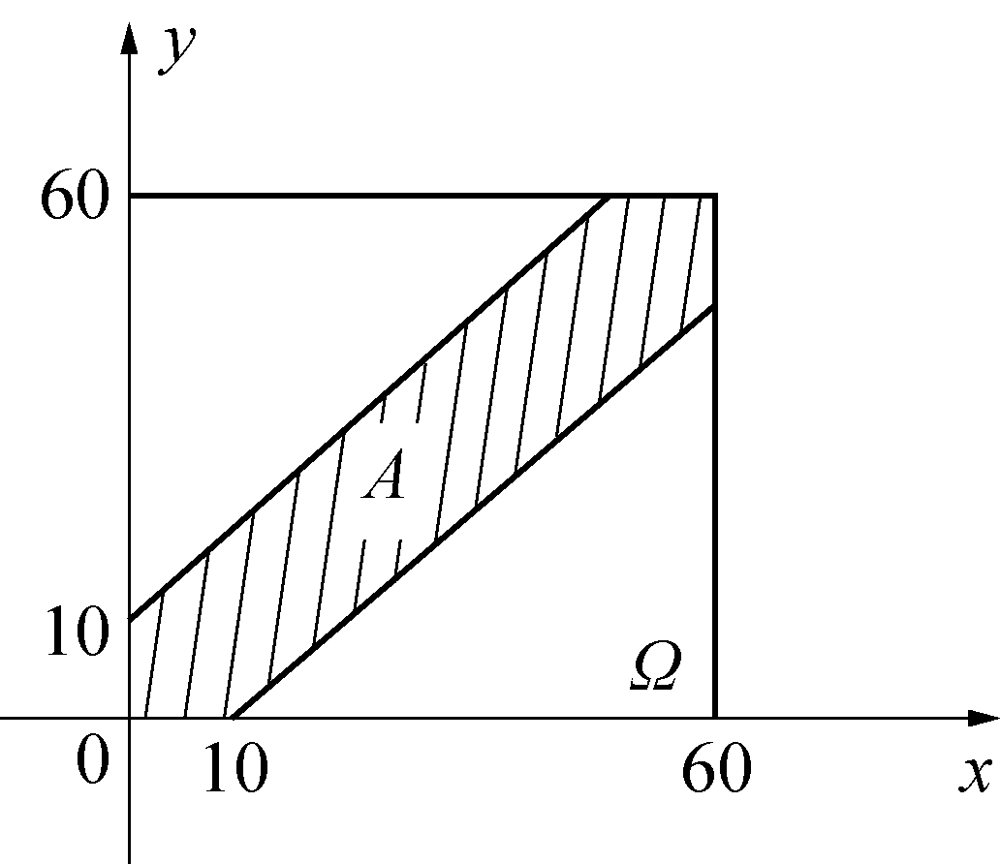

第一章 随机事件与概率
在自然界和人类社会生活中，存在着两类截然不同的现象：一类是在一定条件下必然发生的确定性现象（如水在标准大气压下加热到 100℃ 必然沸腾，同性电荷相互排斥等）；另一类是在相同的条件下，可能会出现多种不同结果，但在试验之前无法确切预知究竟会出现哪一种结果的随机现象（如抛一枚硬币无法预知正面还是反面朝上，下一位走进商场的顾客性别、测量某物理量的误差等）. 概率论就是一门专门研究和揭示随机现象内在统计规律性的数学学科.
在讨论随机事件可能出现的结果总数时，排列组合是核心的计算工具：
1. 加法原理（分类计数原理）：做一件事，完成它可以有 $n$ 类互斥的途径，在第一类途径中有 $m_1$ 种不同方法，在第二类途径中有 $m_2$ 种不同方法，……，在第 $n$ 类途径中有 $m_n$ 种不同方法，则完成这件事共有 $N = m_1 + m_2 + \dots + m_n$ 种不同方法.
2. 乘法原理（分步计数原理）：做一件事，完成它需要分成 $n$ 个连续的步骤，做第一步有 $m_1$ 种不同方法，做第二步有 $m_2$ 种不同方法，……，做第 $n$ 步有 $m_n$ 种不同方法，则完成这件事共有 $N = m_1 \times m_2 \times \dots \times m_n$ 种不同方法.
3. 排列数：从 $n$ 个不同元素中取出 $r$ ($1 \le r \le n$) 个元素排成一列，不同的排列总数为： $$A_n^r = P_n^r = \frac{n!}{(n-r)!} = n(n-1)\cdots(n-r+1)$$
4. 组合数：从 $n$ 个不同元素中取出 $r$ ($1 \le r \le n$) 个元素并成一组（不考虑次序），不同的组合总数为： $$C_n^r = \binom{n}{r} = \frac{n!}{r!(n-r)!} = \frac{A_n^r}{r!}$$ 组合数具有对称性质 $\binom{n}{r} = \binom{n}{n-r}$ 与加法递推性质 $\binom{n}{r} = \binom{n-1}{r} + \binom{n-1}{r-1}$.
第一节 随机事件及其运算
一、随机试验
为了探索和研究随机现象的统计规律，需要对客观事物进行观察或实验，在概率论中，将对随机现象的观察、测量与试验统称为随机试验（Random Experiment），简称为试验，通常记为 $E$.
一个试验 $E$ 如果满足下列三个条件，则称其为一个随机试验：
- 可重复性：试验在相同的条件下可以重复进行；
- 预知性：每次试验的可能结果不止一个，且在试验进行之前能够明确知道所有的可能结果；
- 不确定性：在每一次试验之前，无法预知本次试验究竟会出现哪一个具体结果.
$E_1$：抛掷一枚质地均匀的硬币，观察正面朝上（$H$）还是反面朝上（$T$）；
$E_2$：掷一颗均匀的六面骰子，观察朝上一面的点数（$1, 2, 3, 4, 5, 6$）；
$E_3$：记录某快餐店从上午 11:00 到 13:00 接到的线上外卖订单总数；
$E_4$：测试一只灯泡的使用寿命 $t$（小时）；
$E_5$：某股票交易日在收盘时的价格变动幅度 $x$.
二、样本空间与样本点
随机试验 $E$ 的所有可能结果所组成的集合称为 $E$ 的样本空间（Sample Space），记为 $\Omega$.
样本空间中的每一个元素，即试验的每一个可能出现的具体结果，称为一个样本点（Sample Point），通常记为 $\omega$. 因此样本空间可表示为 $\Omega = \{\omega\}$.
在例 1 中：
- $E_1$ 的样本空间为 $\Omega_1 = \{H, T\}$，样本点个数为 2（有限样本空间）；
- $E_2$ 的样本空间为 $\Omega_2 = \{1, 2, 3, 4, 5, 6\}$，样本点个数为 6；
- $E_3$ 的样本空间为 $\Omega_3 = \{0, 1, 2, \dots, n, \dots\}$，样本点个数为无限可列个；
- $E_4$ 的样本空间为 $\Omega_4 = \{t : t \ge 0\}$，样本点为连续实数区间（无限不可列样本空间）；
- $E_5$ 的样本空间（假设涨跌停限制为 $\pm 10\%$）为 $\Omega_5 = \{x : -10\% \le x \le 10\%\}$.
三、随机事件
样本空间 $\Omega$ 的任意一个子集 $A$ 称为试验 $E$ 的一个随机事件（Random Event），简称为事件，通常用大写英文字母 $A, B, C, \dots$ 表示.
在一次试验中，如果试验结果 $\omega \in A$，则称事件 $A$ 发生；反之，若 $\omega \notin A$，则称事件 $A$ 未发生.
在事件的概念中，有以下几类极其特殊的事件需要特别明确：
- 基本事件：仅由单个样本点组成的单点集 $\{\omega\}$ 称为基本事件. 基本事件是试验中最直接、不可再分的结果；
- 必然事件：样本空间 $\Omega$ 自身作为子集（$\Omega \subset \Omega$），由于每一次试验的结果 $\omega$ 必然属于 $\Omega$，所以在每次试验中必然发生，称 $\Omega$ 为必然事件；
- 不可能事件：空集 $\varnothing$ 作为样本空间的子集（$\varnothing \subset \Omega$），不包含任何样本点，所以在每一次试验中绝对不会发生，称 $\varnothing$ 为不可能事件.
设试验为掷一颗六面骰子，样本空间 $\Omega = \{1, 2, 3, 4, 5, 6\}$：
事件 $A = \{6\}$ 表示“掷出 6 点”（基本事件）；
事件 $B = \{2, 4, 6\}$ 表示“掷出偶数点”；
事件 $C = \{1, 2, 3, 4, 5, 6\} = \Omega$ 表示“掷出点数不超过 6”（必然事件）；
事件 $D = \{点数 > 6\} = \varnothing$ 表示“掷出点数大于 6”（不可能事件）.
四、随机事件间的关系与运算
因为事件在数学本质上是样本空间 $\Omega$ 的子集，所以事件之间的关系和运算完全遵循集合论的逻辑，但被赋予了生动的概率论实际背景：
1. 事件的关系
(1) 包含与相等：若事件 $A$ 的发生必然导致事件 $B$ 发生，即集合 $A \subset B$（或 $B \supset A$），则称事件 $B$ 包含事件 $A$（图 1-1）. 若 $A \subset B$ 且 $B \subset A$，则称事件 $A$ 与事件 $B$ 相等，记作 $A = B$.

(2) 互不相容（互斥）：若事件 $A$ 与事件 $B$ 不能在同一次试验中同时发生，即集合交集为空集 $A \cap B = \varnothing$（或简记为 $AB = \varnothing$），则称事件 $A$ 与事件 $B$ 是互不相容的（或互斥的，图 1-2）.

2. 事件的运算
(1) 事件的并（和事件）：事件 $A$ 与 $B$ 至少有一个发生所构成的新事件，称为事件 $A$ 与 $B$ 的和事件，记作 $A \cup B$（或 $A + B$，图 1-3）. 其样本点构成集合 $A \cup B = \{\omega : \omega \in A \text{ 或 } \omega \in B\}$. 推广到 $n$ 个事件的情形，$\bigcup_{i=1}^n A_i$ 表示 $A_1, A_2, \dots, A_n$ 中至少有一个发生.
(2) 事件的交（积事件）：事件 $A$ 与 $B$ 同时发生所构成的新事件，称为事件 $A$ 与 $B$ 的积事件，记作 $A \cap B$（常简写作 $AB$，图 1-4）. 其样本点构成集合 $A \cap B = \{\omega : \omega \in A \text{ 且 } \omega \in B\}$.


(3) 事件的差：事件 $A$ 发生而事件 $B$ 不发生所构成的新事件，称为事件 $A$ 与 $B$ 的差事件，记作 $A - B$（图 1-5）. 其样本点集合为 $A - B = \{\omega : \omega \in A \text{ 且 } \omega \notin B\}$. 显然有关系式：$A - B = A - AB = A\bar{B}$.
(4) 对立事件（逆事件）：事件 $A$ 不发生所构成的新事件，称为事件 $A$ 的对立事件（或逆事件），记作 $\bar{A}$（图 1-6）. 其样本点集合为 $\bar{A} = \Omega - A = \{\omega : \omega \in \Omega \text{ 且 } \omega \notin A\}$.


1. 对立事件一定是互斥事件，即 $A \cap \bar{A} = \varnothing$；但互斥事件不一定是对立事件，对立事件还必须满足充满整个样本空间，即 $A \cup \bar{A} = \Omega$；
2. 对立具有双向性：$\bar{\bar{A}} = A$；
3. 必然事件与不可能事件互为对立事件：$\bar{\Omega} = \varnothing, \bar{\varnothing} = \Omega$.
3. 事件的代数运算规律
设 $A, B, C$ 为任意三个事件，事件的运算满足以下定律：
- 交换律：$A \cup B = B \cup A, \quad AB = BA$
- 结合律：$(A \cup B) \cup C = A \cup (B \cup C), \quad (AB)C = A(BC)$
- 分配律： $$A \cup (BC) = (A \cup B)(A \cup C), \quad A(B \cup C) = (AB) \cup (AC)$$
- 吸收律：若 $A \subset B$，则 $A \cup B = B, \quad AB = A$
- 对偶律（德·摩根定律，极重要）： $$\overline{A \cup B} = \bar{A} \cap \bar{B} = \bar{A}\bar{B}, \qquad \overline{AB} = \bar{A} \cup \bar{B}$$ 推广到有限或无限个事件的情形： $$\overline{\bigcup_{i} A_i} = \bigcap_{i} \bar{A}_i, \qquad \overline{\bigcap_{i} A_i} = \bigcup_{i} \bar{A}_i$$ （文字口诀：“长杠变短杠，开口转向相反”）.
设 $A, B, C$ 分别表示某车间三台机床在一天内发生故障的事件，试用 $A, B, C$ 及其运算表示下列事件：
(1) 只有机床 $A$ 发生故障；
(2) 机床 $A$ 和 $B$ 发生故障，而机床 $C$ 不发生故障；
(3) 三台机床中至少有一台发生故障；
(4) 三台机床都发生故障；
(5) 恰好有一台机床发生故障；
(6) 至少有两台机床发生故障；
(7) 至多有一台机床发生故障；
(8) 没有一台机床发生故障.
【解】
(1) 只有 $A$ 发生故障，即 $A$ 发生且 $B, C$ 都不发生：$E_1 = A\bar{B}\bar{C}$；
(2) $A, B$ 发生且 $C$ 不发生：$E_2 = AB\bar{C}$；
(3) 至少一台发生故障（和事件）：$E_3 = A \cup B \cup C$；
(4) 三台都发生故障（积事件）：$E_4 = ABC$；
(5) 恰好有一台发生故障（分为三类互斥情形）：$E_5 = A\bar{B}\bar{C} \cup \bar{A}B\bar{C} \cup \bar{A}\bar{B}C$；
(6) 至少有两台发生故障（两两积事件的并）：$E_6 = AB \cup BC \cup AC$；
(7) 至多有一台发生故障（等于“没有机床故障”与“恰有一台故障”之并，或对立于“至少两台故障”）： $$E_7 = \bar{E}_6 = \overline{AB \cup BC \cup AC} = \bar{A}\bar{B} \cup \bar{B}\bar{C} \cup \bar{A}\bar{C}$$ 也可直接写为：$E_7 = \bar{A}\bar{B}\bar{C} \cup A\bar{B}\bar{C} \cup \bar{A}B\bar{C} \cup \bar{A}\bar{B}C$；
(8) 没有一台发生故障：$E_8 = \bar{A}\bar{B}\bar{C} = \overline{A \cup B \cup C}$.
第二节 概率的定义及其性质
一、频率与统计概率
在相同的条件下重复进行了 $n$ 次试验，设事件 $A$ 在这 $n$ 次试验中出现的次数为 $n_A$（称为事件 $A$ 发生的频数），则比值 $$f_n(A) = \frac{n_A}{n}$$ 称为在这 $n$ 次试验中事件 $A$ 出现的频率.
频率具有明显的三个基本属性：(1) $0 \le f_n(A) \le 1$；(2) $f_n(\Omega) = 1, f_n(\varnothing) = 0$；(3) 若 $A_1, A_2, \dots, A_k$ 两两互不相容，则 $f_n(\bigcup_{i=1}^k A_i) = \sum_{i=1}^k f_n(A_i)$.
大量的随机试验表明，当试验次数 $n$ 逐渐增大时，事件 $A$ 出现的频率 $f_n(A)$ 会在一个确定的常数附近摆动，并随着 $n$ 的无限增大越来越稳定在这个常数附近. 这种客观存在的性质称为频率的稳定性. 历史上如蒲丰（投 4040 次，正面 2048 次，频率 0.5069）、皮尔逊（投 24000 次，正面 12012 次，频率 0.5005）等掷硬币实验，生动印证了频率向 $0.5$ 稳定集聚的事实. 这个稳定的中心客观常数，就是事件 $A$ 发生的概率（Probability）.
二、概率的公理化定义
1933 年，苏联数学家柯尔莫哥洛夫（A. N. Kolmogorov）建立了概率论的严格公理化体系，使概率论摆脱了经验直观，成为现代数学的严密分支.
设随机试验的样本空间为 $\Omega$，$A$ 为任意随机事件. 若存在一个实值函数 $P(A)$，满足以下三条公理：
- 非负性公理：对任意事件 $A$，有 $P(A) \ge 0$；
- 规范性公理：对于必然事件 $\Omega$，有 $P(\Omega) = 1$；
- 可列可加性公理：设 $A_1, A_2, \dots, A_n, \dots$ 为两两互不相容的事件序列（即当 $i \ne j$ 时，$A_i A_j = \varnothing$），则有： $$P\left(\bigcup_{i=1}^\infty A_i\right) = \sum_{i=1}^\infty P(A_i)$$
则称 $P(A)$ 为事件 $A$ 的概率.
三、概率的基本性质
由上述公理化定义，可推导出一系列重要的性质：
性质 1（不可能事件概率为 0）：$$P(\varnothing) = 0$$
性质 2（有限可加性）：若事件 $A_1, A_2, \dots, A_n$ 两两互不相容，则 $$P\left(\bigcup_{i=1}^n A_i\right) = \sum_{i=1}^n P(A_i)$$
性质 3（对立事件概率公式）：对任意事件 $A$，有 $$P(\bar{A}) = 1 - P(A)$$ 推论：对任意事件 $A$，必有 $0 \le P(A) \le 1$.
性质 4（单调性与差事件公式）：若 $A \subset B$，则 $$P(B - A) = P(B) - P(A), \qquad \text{且 } P(A) \le P(B)$$
性质 5（一般减法公式）：对任意两个事件 $A, B$，有 $$P(A - B) = P(A\bar{B}) = P(A) - P(AB)$$
性质 6（加法公式 / 容斥原理）：对任意两个事件 $A, B$，有 $$P(A \cup B) = P(A) + P(B) - P(AB)$$ 推广到任意三个事件 $A, B, C$： $$P(A \cup B \cup C) = P(A) + P(B) + P(C) - P(AB) - P(BC) - P(AC) + P(ABC)$$ 推广到任意 $n$ 个事件的情形： $$P\left(\bigcup_{i=1}^n A_i\right) = \sum_{i=1}^n P(A_i) - \sum_{1 \le i < j \le n} P(A_i A_j) + \sum_{1 \le i < j < k \le n} P(A_i A_j A_k) - \dots + (-1)^{n-1} P(A_1 A_2 \cdots A_n)$$
在一间包含 $n$ ($n \le 365$) 个人的教室里，求至少有两人的生日在同一天的概率 $P(A)$.
【解】
设一年按 365 天计算，每个人的生日有 365 种等可能的情形. 由乘法原理，$n$ 个人的生日总共有 $365^n$ 种不同组合.
事件 $A$ 为“至少有两人同一天过生日”，直接分类讨论情况极其繁多；而其对立事件 $\bar{A}$ 为“这 $n$ 个人的生日全不相同”，即从 365 天中任选 $n$ 天分配给这 $n$ 个人，排列数为 $A_{365}^n = 365 \times 364 \times \dots \times (365 - n + 1)$.
因此对立事件的概率为： $$P(\bar{A}) = \frac{A_{365}^n}{365^n} = \frac{365 \times 364 \times 363 \times \dots \times (365 - n + 1)}{365^n}$$
由性质 3，所求概率为： $$P(A) = 1 - P(\bar{A}) = 1 - \frac{365 \times 364 \times \dots \times (365 - n + 1)}{365^n}$$
趣味结论：数值代入发现，当 $n = 23$ 时，$P(A) \approx 0.5073 > 50\%$；当 $n = 50$ 时，$P(A) \approx 0.970$；当 $n = 60$ 时，$P(A) > 99.4\%$. 这与很多人的直觉大相径庭，被称为“生日悖论”，生动展示了对立事件求概率的巨大优势.
设 $A, B$ 为随机事件，已知 $P(A) = 0.6, P(B) = 0.7$，$P(A \cup B) = 0.9$，求：
(1) $P(AB)$； (2) $P(A - B)$； (3) $P(\bar{A}\bar{B})$； (4) $P(A\bar{B} \cup \bar{A}B)$.
【解】
(1) 由加法公式 $P(A \cup B) = P(A) + P(B) - P(AB)$，代入得： $$0.9 = 0.6 + 0.7 - P(AB) \implies P(AB) = 0.6 + 0.7 - 0.9 = 0.4$$
(2) 由减法公式： $$P(A - B) = P(A\bar{B}) = P(A) - P(AB) = 0.6 - 0.4 = 0.2$$
(3) 由德·摩根定律与对立事件性质： $$P(\bar{A}\bar{B}) = P(\overline{A \cup B}) = 1 - P(A \cup B) = 1 - 0.9 = 0.1$$
(4) 注意事件 $A\bar{B}$ 与 $\bar{A}B$ 是互不相容的（$A\bar{B} \cap \bar{A}B = \varnothing$），由有限可加性： $$P(A\bar{B} \cup \bar{A}B) = P(A\bar{B}) + P(\bar{A}B) = [P(A) - P(AB)] + [P(B) - P(AB)] = (0.6 - 0.4) + (0.7 - 0.4) = 0.2 + 0.3 = 0.5$$
第三节 等可能概型
一、古典概型
若一个随机试验满足以下两个特征：
- 有限性：样本空间 $\Omega$ 中仅包含有限个样本点，设为 $n$ 个，即 $\Omega = \{\omega_1, \omega_2, \dots, \omega_n\}$；
- 等可能性：每个基本事件出现的可能性均相同，即 $P(\{\omega_1\}) = P(\{\omega_2\}) = \dots = P(\{\omega_n\}) = \frac{1}{n}$.
这类随机试验的模型称为古典概型（Classical Probability Model）.
在古典概型中，若事件 $A$ 包含 $m$ 个基本事件，则事件 $A$ 的概率为： $$P(A) = \frac{A \text{ 包含的基本事件数}}{\Omega \text{ 包含的基本事件总数}} = \frac{m}{n}$$
袋中有 10 只质地、大小完全相同的球，其中 6 只白球，4 只黑球. 从中任取 3 只球，求：
(1) 取出的 3 只球全为白球的概率；
(2) 取出的 3 只球中恰有 2 只白球、1 只黑球的概率；
(3) 取出的 3 只球中至少有 1 只黑球的概率.
【解】
从 10 只球中不放回地任取 3 只，样本点总数为 $n = C_{10}^3 = \frac{10 \times 9 \times 8}{3 \times 2 \times 1} = 120$.
(1) 记 $A = \{\text{3只全为白球}\}$，所含样本点数即从 6 只白球中取 3 只，因此 $m = C_6^3 = \frac{6 \times 5 \times 4}{3 \times 2 \times 1} = 20$. $$P(A) = \frac{C_6^3}{C_{10}^3} = \frac{20}{120} = \frac{1}{6}$$
(2) 记 $B = \{\text{恰有2白1黑}\}$，从 6 只白球中选 2 只，从 4 只黑球中选 1 只，根据乘法原理，样本点数 $m = C_6^2 \times C_4^1 = 15 \times 4 = 60$. $$P(B) = \frac{C_6^2 C_4^1}{C_{10}^3} = \frac{60}{120} = \frac{1}{2}$$
(3) 记 $C = \{\text{至少有1只黑球}\}$，其对立事件 $\bar{C} = \{\text{3只全为白球}\} = A$. 故直接利用对立事件概率： $$P(C) = 1 - P(\bar{C}) = 1 - P(A) = 1 - \frac{1}{6} = \frac{5}{6}$$
某工厂生产的一批产品共有 $N$ 件，其中有 $M$ 件次品（$N-M$ 件正品）. 现从中随机不放回抽取 $n$ 件进行质检，求抽到的 $n$ 件产品中恰好包含 $k$ 件次品（$k \le M, n-k \le N-M$）的概率.
【解】
从 $N$ 件中抽取 $n$ 件的总取法为 $C_N^n$；抽到 $k$ 件次品必然伴随着抽到 $n-k$ 件正品，取法为 $C_M^k C_{N-M}^{n-k}$. 故所求概率为： $$P(X = k) = \frac{C_M^k C_{N-M}^{n-k}}{C_N^n}$$ （该概率模型是第二章“超几何分布”的来源）.
二、几何概型
古典概型要求样本点总数是有限的，但在实际生产与工程中，常常遇到样本点总数是无限不可列的情形（例如质点在平面区域内随机落点、随机时刻接听电话等）. 此时需要引入几何概型.
若随机试验满足以下两个特征：
- 无限性：样本空间 $\Omega$ 是某个具有有限几何度量（长度、面积或体积）的几何区域；
- 等可能性：向该区域内投掷一个随机点，落入其中任意子区域 $A$ 的可能性大小只与该子区域的几何度量成正比，而与 $A$ 的位置和形状无关.
这类概率模型称为几何概型（Geometric Probability Model）. 其计算公式为： $$P(A) = \frac{\mu(A)}{\mu(\Omega)}$$ 其中 $\mu$ 表示区域的几何度量（一维为长度 $L$，二维为面积 $S$，三维为体积 $V$）.
甲、乙两人约定在上午 8:00 到 9:00 之间到某地会面，并约定先到者等待另一个人 20 分钟，过时即可离去. 设两人到达该地的时刻是随机且相互独立的，求两人能会面的概率.
【解】
以 8:00 为时间零点，以分钟为单位. 设甲到达时刻为 $x$，乙到达时刻为 $y$，则样本空间为平面上的正方形区域： $$\Omega = \{(x, y) : 0 \le x \le 60, \; 0 \le y \le 60\}$$ 样本区域面积为 $S_\Omega = 60 \times 60 = 3600$.
两人能够会面的充分必要条件是两人到达时刻相差不超过 20 分钟，即 $|x - y| \le 20$，即： $$-20 \le x - y \le 20 \iff x - 20 \le y \le x + 20$$

该事件 $A$ 在正方形中对应的是两条平行线 $y = x + 20$ 与 $y = x - 20$ 之间的六边形带状区域（图 1-7）. 考虑其对立事件 $\bar{A}$（未能会面），$\bar{A}$ 由左上角和右下角两个直角边长为 $60 - 20 = 40$ 的等腰直角三角形构成： $$S_{\bar{A}} = 2 \times \left(\frac{1}{2} \times 40 \times 40\right) = 1600$$
因此事件 $A$ 的面积为 $S_A = S_\Omega - S_{\bar{A}} = 3600 - 1600 = 2000$.
由几何概型公式，两人能够会面的概率为： $$P(A) = \frac{S_A}{S_\Omega} = \frac{2000}{3600} = \frac{5}{9} \approx 0.556$$
平面上画有一组间距为 $a$ 的等距平行线，向该平面随机投掷一枚长度为 $l$ ($l \le a$) 的细针，求细针与平行线相交的概率.
【解】

设针的中心点到最近平行线的距离为 $x$，针与平行线的夹角为 $\varphi$. 显然 $x$ 和 $\varphi$ 的取值范围为： $$0 \le x \le \frac{a}{2}, \qquad 0 \le \varphi \le \pi$$ 样本空间在 $(x, \varphi)$ 平面上构成一个矩形区域，其面积为： $$S_\Omega = \frac{a}{2} \times \pi = \frac{a\pi}{2}$$
由几何投影关系（图 1-8），细针与平行线相交的充要条件是：中心到线的距离 $x$ 小于等于针沿垂直方向半投影长，即： $$x \le \frac{l}{2} \sin \varphi$$
事件 $A$ 所对应的面积为曲线 $x = \frac{l}{2} \sin \varphi$ 下方的曲边梯形面积： $$S_A = \int_0^\pi \frac{l}{2} \sin \varphi \, d\varphi = \left. -\frac{l}{2} \cos \varphi \right|_0^\pi = \frac{l}{2}[-(-1) - (-1)] = l$$
因此细针与平行线相交的概率为： $$P(A) = \frac{S_A}{S_\Omega} = \frac{l}{\frac{a\pi}{2}} = \frac{2l}{\pi a}$$
历史意义：该公式给出了用随机模拟（蒙特卡罗方法）估算圆周率 $\pi$ 的经典方法：多次投针得到相交频率 $f$，反解 $\pi \approx \frac{2l}{f a}$！
第四节 条件概率与事件的相互独立性
一、条件概率
在实际问题中，我们常常需要在已知某个事件 $B$ 已经发生的附加信息或先验条件下，重新评估另一个事件 $A$ 发生的概率.
设 $A, B$ 为两个事件，且 $P(B) > 0$，则称 $$P(A|B) = \frac{P(AB)}{P(B)}$$ 为在事件 $B$ 已经发生的条件下，事件 $A$ 发生的条件概率.
条件概率 $P(\cdot | B)$ 完全满足柯尔莫哥洛夫公理化的三条基本公理：
- 非负性：$P(A|B) \ge 0$；
- 规范性：$P(\Omega|B) = 1$；
- 可列可加性：若 $A_1, A_2, \dots$ 两两互斥，则 $P(\bigcup_{i=1}^\infty A_i | B) = \sum_{i=1}^\infty P(A_i | B)$.
因此，条件概率同样具备对立事件公式 $P(\bar{A}|B) = 1 - P(A|B)$ 以及加法公式 $P(A_1 \cup A_2 | B) = P(A_1|B) + P(A_2|B) - P(A_1 A_2 | B)$.
二、乘法定理
由条件概率定义直接移项可得：
若 $P(B) > 0$，则： $$P(AB) = P(B)P(A|B)$$ 类似地，若 $P(A) > 0$，则： $$P(AB) = P(A)P(B|A)$$
推广到 $n$ 个事件的情形：设 $A_1, A_2, \dots, A_n$ 为 $n$ 个事件，且 $P(A_1 A_2 \dots A_{n-1}) > 0$，则： $$P(A_1 A_2 \dots A_n) = P(A_1)P(A_2|A_1)P(A_3|A_1 A_2)\dots P(A_n|A_1 A_2 \dots A_{n-1})$$
袋中有 5 只球，其中 3 只白球、2 只黑球. 现每次从中随机取出一只球（不放回），连续取 3 次. 求第 1 次、第 2 次取到白球且第 3 次取到黑球的概率.
【解】
记 $A_i = \{\text{第 } i \text{ 次取到白球}\}$ ($i=1, 2$)，$B_3 = \{\text{第 3 次取到黑球}\}$. 所求事件即积事件 $A_1 A_2 B_3$.
由乘法公式： $$P(A_1 A_2 B_3) = P(A_1)P(A_2|A_1)P(B_3|A_1 A_2)$$
- 第 1 次取到白球的概率：$P(A_1) = \frac{3}{5}$；
- 第 1 次取出白球后，袋内剩 2 白 2 黑共 4 只球，故 $P(A_2|A_1) = \frac{2}{4}$；
- 前两次取完后，袋内剩 1 白 2 黑共 3 只球，故 $P(B_3|A_1 A_2) = \frac{2}{3}$.
因此： $$P(A_1 A_2 B_3) = \frac{3}{5} \times \frac{2}{4} \times \frac{2}{3} = \frac{1}{5} = 0.2$$
三、事件的相互独立性
在很多随机现象中，事件 $B$ 的发生与否，对事件 $A$ 发生的概率没有任何影响，此时 $P(A|B) = P(A)$. 根据乘法定理，这等价于 $P(AB) = P(A)P(B)$.
设 $A, B$ 为两个事件，如果满足等式： $$P(AB) = P(A)P(B)$$ 则称事件 $A$ 与事件 $B$ 相互独立（简称独立）.
设事件 $A$ 与 $B$ 相互独立，则下列三对事件也分别相互独立：
(1) $A$ 与 $\bar{B}$ 相互独立； (2) $\bar{A}$ 与 $B$ 相互独立； (3) $\bar{A}$ 与 $\bar{B}$ 相互独立.
【证明】 以证 (1) 为例：由于 $A = AB \cup A\bar{B}$ 且 $AB$ 与 $A\bar{B}$ 互斥，由加法性质： $$P(A) = P(AB) + P(A\bar{B})$$ 因为 $A$ 与 $B$ 独立，有 $P(AB) = P(A)P(B)$，代入得： $$P(A\bar{B}) = P(A) - P(AB) = P(A) - P(A)P(B) = P(A)[1 - P(B)] = P(A)P(\bar{B})$$ 故 $A$ 与 $\bar{B}$ 相互独立. 其余两项同理可证. $\blacksquare$
设 $A, B, C$ 为三个事件，如果满足下列四个等式：
$$\begin{cases} P(AB) = P(A)P(B) \\ P(BC) = P(B)P(C) \\ P(AC) = P(A)P(C) \\ P(ABC) = P(A)P(B)P(C) \end{cases}$$则称事件 $A, B, C$ 相互独立.
特别提醒：仅满足前三式称为两两独立，两两独立不能推出相互独立！必须同时满足第四个“积事件概率等于概率之积”的条件.
某继电器控制系统由 4 个独立工作的电子元件构成，设每个元件正常工作的概率均为 $p$ ($0 < p < 1$). 求系统正常通路运行的概率.
【解】
并联系统正常工作的充要条件是：至少有一个支路正常，故其可靠性利用对立事件求解最为简便： $$P(\text{并联}) = 1 - P(\text{全损坏}) = 1 - (1-p_1)(1-p_2)$$
串联系统正常工作的充要条件是：所有串联元件必须同时正常，由独立性： $$P(\text{串联}) = P_1 \times P_2 \times \dots \times P_k$$
若系统由两个并联支路串联而成，总可靠性即为各部分可靠性之积.
第五节 全概率公式与贝叶斯公式
一、样本空间的划分（全集划分）
设 $\Omega$ 为试验 $E$ 的样本空间，$B_1, B_2, \dots, B_n$ 为一组事件，若满足：
- 互不相容性：$B_i B_j = \varnothing$（当 $i \ne j$ 时）；
- 完备覆盖性：$\bigcup_{i=1}^n B_i = \Omega$；
- 正概率性：$P(B_i) > 0$ ($i = 1, 2, \dots, n$).
则称 $B_1, B_2, \dots, B_n$ 为样本空间 $\Omega$ 的一个划分（或完备事件群）.
二、全概率公式
设 $B_1, B_2, \dots, B_n$ 是样本空间 $\Omega$ 的一个划分，且 $P(B_i) > 0$ ($i=1, 2, \dots, n$). 则对任一事件 $A$，有： $$P(A) = \sum_{i=1}^n P(B_i)P(A|B_i)$$
【推导证明】 因为 $\Omega = \bigcup_{i=1}^n B_i$，所以： $$A = A\Omega = A\left(\bigcup_{i=1}^n B_i\right) = \bigcup_{i=1}^n AB_i$$ 由于 $B_i$ 两两互不相容，因此 $AB_i$ 也两两互不相容. 由概率的有限可加性： $$P(A) = \sum_{i=1}^n P(AB_i)$$ 再结合乘法公式 $P(AB_i) = P(B_i)P(A|B_i)$，即得： $$P(A) = \sum_{i=1}^n P(B_i)P(A|B_i) \qquad \blacksquare$$
思想精髓：全概率公式体现了“化整为零”的分解策略. 当一个复杂事件 $A$ 的概率不易直接计算时，可以借助导致 $A$ 发生的各种互不相容的前提“原因” $B_i$ 进行加权平均求和.
三、贝叶斯公式
设 $B_1, B_2, \dots, B_n$ 是样本空间 $\Omega$ 的一个划分，$P(B_i) > 0$ ($i=1, \dots, n$). $A$ 为一个事件且 $P(A) > 0$. 则： $$P(B_k|A) = \frac{P(B_k A)}{P(A)} = \frac{P(B_k)P(A|B_k)}{\sum_{i=1}^n P(B_i)P(A|B_i)}, \qquad k = 1, 2, \dots, n$$
1. 先验概率 $P(B_k)$：在试验之前，依据历史经验或常识对各种原因 $B_k$ 发生可能性大小的主观或先验估计；
2. 后验概率 $P(B_k|A)$：在观察到试验结果（“结果 $A$ 已经发生”）的新证据后，对原先原因 $B_k$ 发生的概率进行修正更新；
3. 贝叶斯公式是现代人工智能、机器学习分类器（朴素贝叶斯算法）、垃圾邮件过滤和临床疾病诊断的核心数学基石.
某罕见疾病在人群中的发病率为 $0.1\%$. 现有一种医疗诊断测试，其精度如下：若患者确实患病，检测结果呈阳性的概率为 $99\%$（真阳性率）；若被测试者未患病，检测结果误呈阳性的概率为 $0.5\%$（假阳性率）. 现有一位随机抽取的市民参加体检，检测结果呈阳性，求此人确实患有该罕见病的真实概率.
【解】
设 $B_1 = \{\text{被测者患病}\}$，$B_2 = \bar{B}_1 = \{\text{被测者未患病}\}$. 显然 $B_1, B_2$ 构成全集划分.
先验概率：$P(B_1) = 0.1\% = 0.001, \quad P(B_2) = 1 - 0.001 = 0.999$.
设事件 $A = \{\text{检测结果呈阳性}\}$，条件概率为： $$P(A|B_1) = 99\% = 0.99, \qquad P(A|B_2) = 0.5\% = 0.005$$
第一步（由因求果）：由全概率公式计算人群中检测呈阳性的总概率 $P(A)$： $$\begin{aligned} P(A) &= P(B_1)P(A|B_1) + P(B_2)P(A|B_2) \\ &= 0.001 \times 0.99 + 0.999 \times 0.005 \\ &= 0.00099 + 0.004995 = 0.005985 \end{aligned}$$
第二步（由果索因）：由贝叶斯公式求阳性前提下确诊患病的后验概率 $P(B_1|A)$： $$P(B_1|A) = \frac{P(B_1)P(A|B_1)}{P(A)} = \frac{0.00099}{0.005985} \approx 0.1654 = 16.54\%$$
【启示】 令人震撼的是：即使检测试剂准确率高达 99%，在罕见病场景下，单次检测阳性者真正患病的概率竟然只有 16.5% 左右！绝大多数阳性者其实是正常人（假阳性人群占了绝大部分），因此医学上必须进行二次复检确认.
某电子商城所销售的某种芯片由三个不同厂家提供，其中甲厂供货占 $50\%$，乙厂供货占 $30\%$，丙厂供货占 $20\%$. 各厂产品的次品率分别为 $2\%$, $3\%$, $5\%$.
(1) 从该商城中随机抽买一只芯片，求买到次品的概率；
(2) 如果买到的是一只次品，求这只次品是由甲厂生产的概率.
【解】
设 $B_1, B_2, B_3$ 分别表示芯片来自甲、乙、丙厂，$A$ 表示买到的芯片是次品.
已知先验概率：$P(B_1) = 0.5, P(B_2) = 0.3, P(B_3) = 0.2$；
条件次品率：$P(A|B_1) = 0.02, P(A|B_2) = 0.03, P(A|B_3) = 0.05$.
(1) 由全概率公式： $$\begin{aligned} P(A) &= P(B_1)P(A|B_1) + P(B_2)P(A|B_2) + P(B_3)P(A|B_3) \\ &= 0.5 \times 0.02 + 0.3 \times 0.03 + 0.2 \times 0.05 \\ &= 0.010 + 0.009 + 0.010 = 0.029 \end{aligned}$$
(2) 由贝叶斯公式求该次品由甲厂生产的概率： $$P(B_1|A) = \frac{P(B_1)P(A|B_1)}{P(A)} = \frac{0.5 \times 0.02}{0.029} = \frac{0.010}{0.029} = \frac{10}{29} \approx 0.3448$$
本章小结与复习指南
1. 事件关系与运算：牢记交、并、差、对立的集合定义，熟练运用摩根定律 $\overline{A \cup B} = \bar{A}\bar{B}$ 与 $\overline{AB} = \bar{A} \cup \bar{B}$ 进行事件化简；
2. 概率计算三大支柱：
- 公理化性质：加法定理 $P(A \cup B) = P(A) + P(B) - P(AB)$，减法定理 $P(A - B) = P(A\bar{B}) = P(A) - P(AB)$；
- 古典概型与几何概型：等可能性的判断与计数（排列组合 / 面积体积度量）；
- 对立事件法：遇“至少有一个”、“至多有一个”优先使用 $P(A) = 1 - P(\bar{A})$ 简化计算；
3. 条件概率、乘法公式与独立性：
- $P(A|B) = \frac{P(AB)}{P(B)}$，乘法公式 $P(AB) = P(B)P(A|B)$；
- 独立性的充要条件是 $P(AB) = P(A)P(B)$，两两独立与相互独立的本质区别；
4. 全概率公式与贝叶斯公式：
- 全概率公式是“由因导果”，用于求无条件概率 $P(A)$；
- 贝叶斯公式是“由果索因”，用于已知结果 $A$ 求原因 $B_k$ 的后验概率；分母即为全概率公式.
测试题一（综合自测）
一、选择题与填空题
1. 设 $A, B$ 为随机事件，且 $P(A) = 0.7, P(A - B) = 0.3$，则 $P(\bar{A} \cup \bar{B}) =$ _______.
2. 设 $P(A) = 0.4, P(B) = 0.3$，若 $A, B$ 互不相容，则 $P(A|B) =$ ______；若 $A, B$ 相互独立，则 $P(A \cup B) =$ ______.
3. 掷三颗骰子，至少有一颗出现 6 点的概率是 ______.
二、综合计算题
4. 设有两批同规格的灯泡，第一批占 $60\%$，次品率为 $1\%$；第二批占 $40\%$，次品率为 $2\%$. 现从中任取一只灯泡，检验发现是次品，求它属于第一批的概率.
5. 甲、乙两门大炮同时向敌方目标射击，设甲命中目标的概率为 $0.6$，乙命中目标的概率为 $0.7$，目标被命中一发即被摧毁的概率为 $0.5$，被命中两发必被摧毁. 求目标被摧毁的概率.